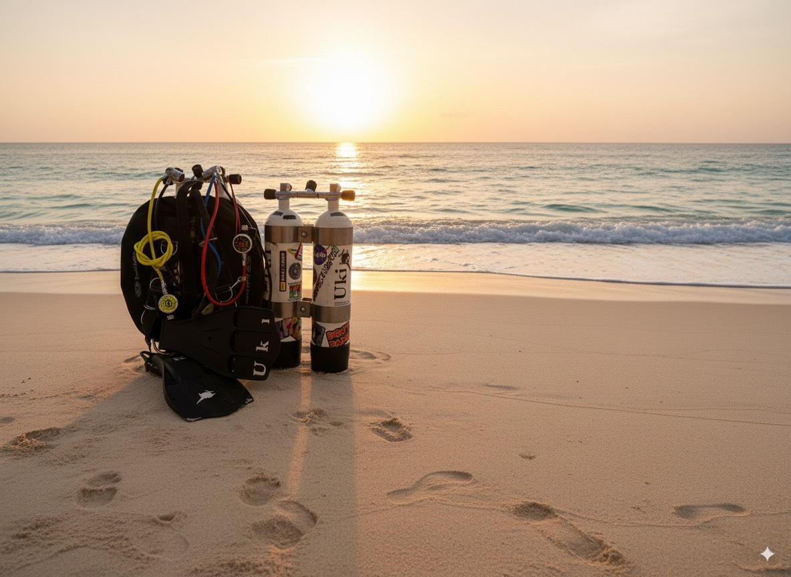
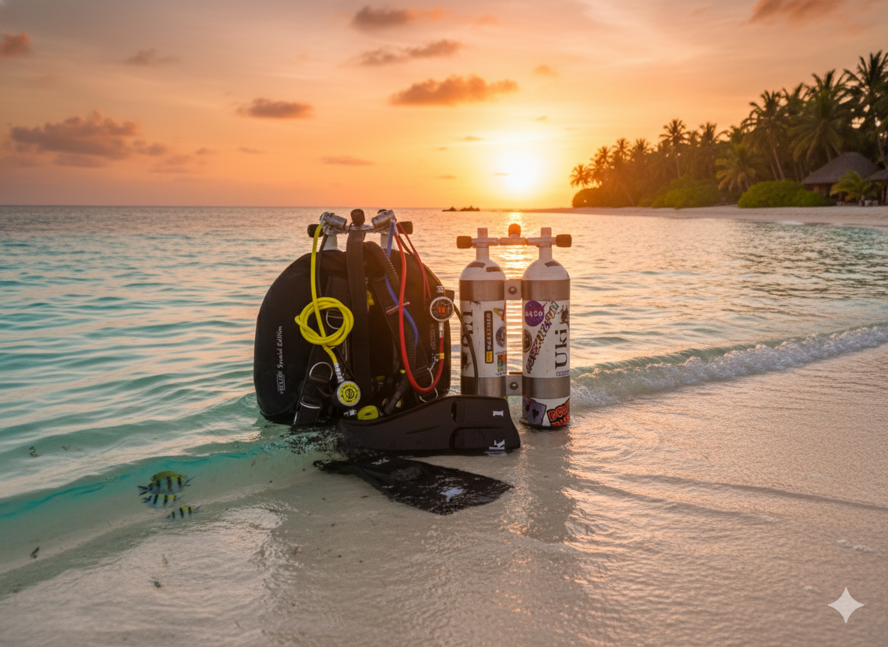
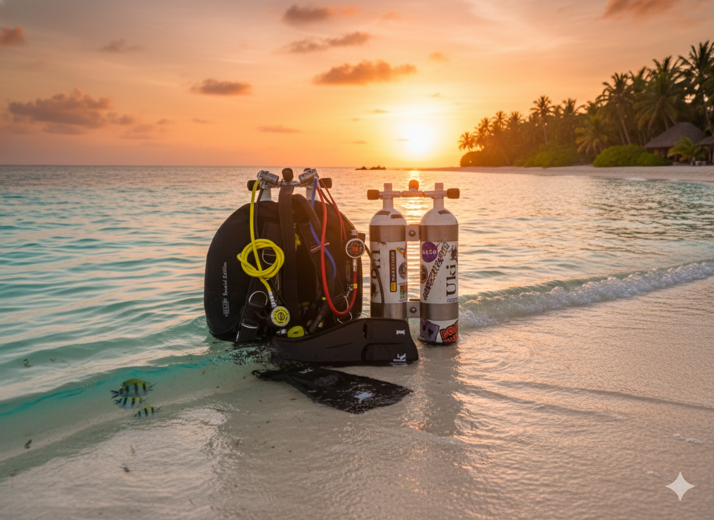
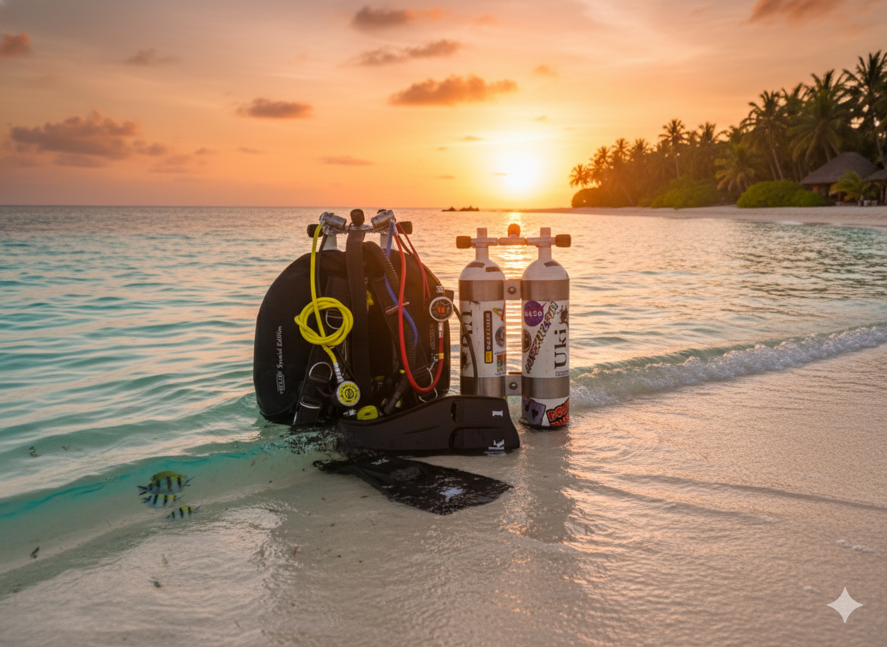

Uki's Dive Tools
Kalkulator SAC
Kalkulator Rock Bottom (RB)
Kalkulator Całkowitego Zużycia Gazu
Kalkulator Zużycia Gazu (z rezerwą RB)
Kalkulator Balastu
Oblicz sugerowany punkt startowy dla Twojego obciążenia.
Wiedza Nurkowa
SAC (Surface Air Consumption)
SAC = ( (P1 - P2) × Vb ) / ( Pśr × T )
- P1: Ciśnienie startowe (bar)
- P2: Ciśnienie końcowe (bar)
- Vb: Pojemność butli (l)
- Pśr: Średnie ciśnienie otoczenia (ATA) = (Głębokość / 10) + 1 (dla wody słonej) lub (Głębokość / 10.3) + 1 (dla wody słodkiej)
- T: Czas (min)
MOD (Maximum Operating Depth)
MOD (metry) = ( (PPO₂ / FO₂) - 1 ) × 10
- PPO₂: Ciśnienie parcjalne tlenu (np. 1.4)
- FO₂: Frakcja tlenu (np. 0.32 dla EAN32)
EAD (Equivalent Air Depth)
EAD (metry) = ( (Głębokość + 10) × FN₂ / 0.79 ) - 10
- FN₂: Frakcja azotu (np. 0.68 dla EAN32)
- 0.79: Frakcja azotu w powietrzu
Całkowite Zużycie Gazu (Plan)
Suma gazu zużytego we wszystkich fazach nurkowania (dla 1 nurka):
Lcałkowite = Lzanurzenie + Ldno + Lwynurzenie + Lprzystanek
- Lzanurzenie: SAC × Pśr-zanurzenie × Tzanurzenie
- Ldno: SAC × Pdno × Tdno
- Lwynurzenie: SAC × Pśr-wynurzenie × Twynurzenie
- Lprzystanek: SAC × Pprzystanek × Tprzystanek
Rezerwa Rock Bottom (RB)
Suma gazu dla 2 nurków w stresie podczas awaryjnego wynurzenia:
LRB = (Gazreakcja + Gazwynurzenie) + Bufor
- SACstres: SAC × Mnożnik stresu (np. 2)
- Gazreakcja: SACstres × Pdno × Treakcja × 2 nurków
- Gazwynurzenie: SACstres × Pśr-wynurzenie × Twynurzenie × 2 nurków
- Bufor: Dodatkowe bary (np. 10 bar) × Pojemność butli
Obliczanie Sugestii Balastu
Obliczenie balastu to heurystyka (dobra zasada), a nie ścisły wzór. Zawsze wykonaj kontrolę pływalności.
Balast = Wagabazowa + Modyfikatory
- Wagabazowa: 10% wagi ciała nurka
- --- Modyfikatory Skafandra ---
- Pianka 3mm: -3 kg
- Pianka 5mm: -2 kg
- Pianka 7mm: 0 kg (baza)
- Suchy (Trylam/Crash): +4kg (Cienki ocieplacz) / +6kg (Gruby ocieplacz)
- Suchy (Neopren): +7kg (Cienki ocieplacz) / +8kg (Gruby ocieplacz)
- --- Modyfikatory Butli (Pływalność Ujemna) ---
- Alu 11L (S80): +1 kg (jest dodatnia)
- Stal 12L: -3 kg
- Stal 15L: -4 kg
- Twin 2x7L (232b): -4 kg
- Twin 2x8.5L (232b): -5 kg
- Twin 2x10L (232b): -6 kg
- Twin 2x12L (232b): -8 kg
- Twin 2x7L (300b): -6 kg
- Twin 2x8.5L (300b): -7 kg
- Twin 2x10L (300b): -8 kg
- Twin 2x12L (300b): -10 kg
- Płyta Alu (dla Twina): -0.85 kg
- Płyta Stal (dla Twina): -2 kg
- --- Modyfikatory Inne ---
- Woda Słodka: -2 kg
- Budowa Szczupła: +2 kg
- Budowa Atletyczna: -3 kg
- Budowa Nadwaga: +3 kg
Ustawienia
Zmień Tapetę

.png)
.png)
 

